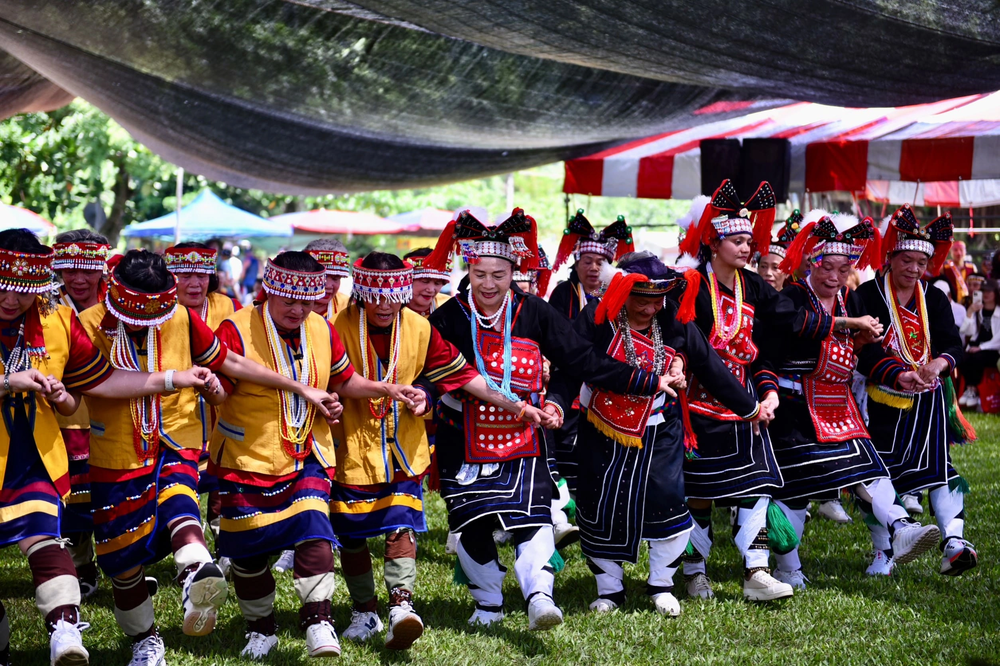

撒奇萊雅
年祭
撒奇萊雅
Malalikid
年祭
祭典於小米收成後進行，小米在收割的時候，就要編織山棕葉來綁小米穗，並準備糯米年糕、酒、檳榔放在門口，由神職人員分配給家中有成員傷亡的家庭，稱為patongi’。patongi’之後，才開始舉行malalikid’，族人著正式服裝由頭目帶領進行祭祀，感謝創造之神Malataw
護佑農作收成。祭典最後以慶祝餐會巴歌浪作為結束，也就是前往捕魚後，將魚獲搭配糯米飯進行的會餐。
懸停圖片查看更多
撒奇萊雅
Palamalan
火神祭
花蓮市是撒奇萊雅族早期最大的聚居地，族人世居奇萊平原，1878年發生達固湖灣事件，慘遭滅族之禍，清兵為剿滅撒奇萊雅族，以火攻陷部落刺竹圍籬，不僅燒毀達固湖灣部落，也將撒奇萊雅族燒進歷史洪流之中，一百多年來，倖存的族人隱遁在阿美族群中，刻意隱瞞身份及外顯特徵，包括傳統衣飾、祭典及物品等均已嚴重流失，僅有語言保留尚稱完整，直到2007年才正名成功。
為紀念在戰役中喪生的頭目、頭目夫人，2006年7月1日，撒奇萊雅族於花蓮市國福部落首次舉辦火神祭，藉以追祀曾為族人奮戰過的祖先。
懸停圖片查看更多

南勢阿美
Malalikid
年祭
每年七到九月穀物收成之後，阿美族各部落獨立舉行豐年祭，表達慎終追遠的傳統文化，具備宗教信仰意義。
豐年祭由年齡階級組織主導祭儀，重視教育訓練與晉升儀式，過程中各階級必須遵守領導階層的要求，藉由合作達成各項任務；另一共同性的活動為「malikuda」集體歌舞，為男性年齡階級團體牽手共舞，有集體訓練與團結合作的意義。
懸停圖片查看更多
南勢阿美
Mirecuk
巫師祭
Sikawasay(祭師)擔任部落祭儀與治病工作，Sikawasay(祭師)並非隨意都可擔任，而是要經歷與Haydang（致病群靈）相關疾病的治癒後，才會走上這一條路。在傳統上，每年大約九月、十月部落會舉辦Mirecuk，是Sikawasay（祭師）每年祭祀自己的Haydang（致病群靈）與相關神靈的時間。
懸停圖片查看更多
南勢阿美
Paluna
船祭
南勢阿美族部落於每八年一次的「勇士晉階禮歲時祭儀」，相傳1400年前，阿美族里漏部落七位祖先，分別搭乘獨木舟在日東昌村海濱登陸，為緬懷祖先冒險渡海至花蓮拓墾的辛勞，由即將成為部落勇士們延續長達400年歷史的傳統，抬著獨木舟前往傳說中部落祖先登陸地點-洄瀾灣廣場，進行獨有的船祭(paluna)儀式，期盼船祭儀歌舞永續傳承、生生不息。
懸停圖片查看更多